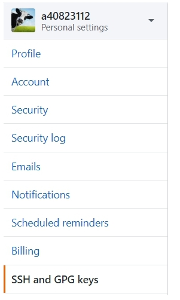

W1 <<
Previous Next >> 建立倉儲
利用SSH維護倉儲
新增鑰匙:
Step1: 使用編輯器進入shell命令環境

Step2:輸入指令，在y/tmp/key/id_rsa目錄下新增id_rsa與id_rsa等private key與public key
ssh-keygen -t rsa -b 4096 -C "學號"

Step3:開啟Y/Putty目錄下的puttygen.exe將id_rsa轉為Putty可解讀的.ppk格式
Step4:將public key利用scite開啟，在工具列中Options-Wrap就可見完整的檔案內容
Step5:將內容複製後，開啟github settings中的SSH and GPD keys

選擇 New SSH keys

將複製內容放入KEY的空格
設定Putty:
Step1:修改start.bat設定，新增
set GIT_HOME=%Disk%:\portablegit\bin\
set GIT_SSH=%Disk%:\putty\plink.exe
Step2:設定y/home/.shh中的config

Step3:將倉儲中.git目錄下的config連線設定，由https更改為ssh連線

Step4:開啟 Putty.exe

Step5:Load github.com

Step6:進入Connection/SSH/Auth選擇之前創的Key

Step7:回到Session按save

Step8:按下open後就可進行push
W1 <<
Previous Next >> 建立倉儲